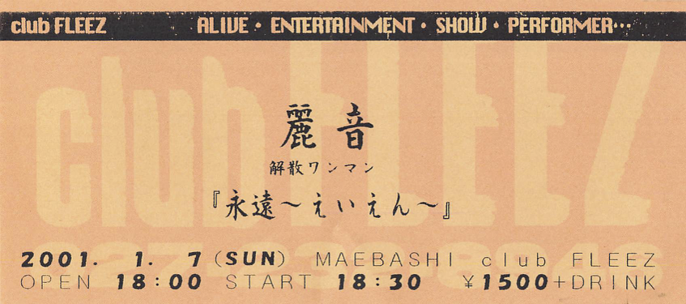

 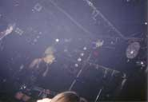
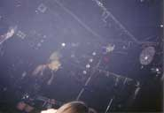

 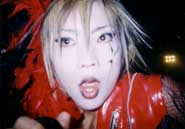
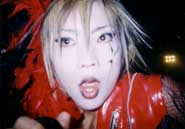


 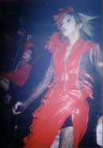
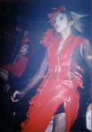
 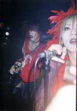
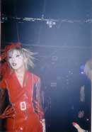
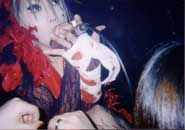
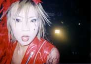
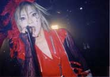
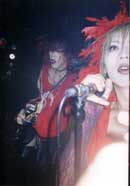
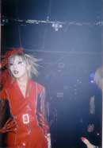
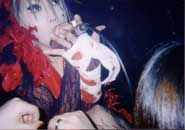
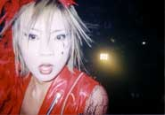
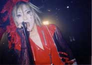


Note: Click on the image to see a larger version.
−−Scene 1−−
- SE -
1. less
2. ga.RA.ku.TA.ba.KO (ga.ラ.ku.タ.ba.コ)
3. su.i.cide
4. Hikari no Kage (光の影)
5. Shinka no Shunkan (進化の瞬間)
- SE -
6. REPLICA (レプリカ)
−−Scene 2−−
- SE -
Drums solo. Bass&Drums JAM.
1. Shimobe (隷-しもべ-)
- SE -
2. Gyou (行)
3. Fusei Reiju (浮生麗終)
−−Scene 3−−
- SE -
1. Kinu no Ito to Kumo no Ito (絹の絲と蜘の意図) (GJAMver.)
- MC -
2. eternalseason
3. Hana (華)
- MC -
4. Kinu no Ito to Kumo no Ito (絹の絲と蜘の意図)
−−Encore−−
- SE -
- MC -
1. RAIN~Uruwashii Oto~ (RAIN〜麗しい音〜)
2. Youen (妖艶)
Lottery & All members MC
LAST SONG - "less"
Today is the last day to see RAIN... So I took more pictures than usual!
There were about five costume changes this day.
Black costume -> Kinu-Kumo's costume -> TOKKOUFUKU (特攻服) -> White costume -> Black suit
The first song of the live was "less". Everyone was jumping up and down and having fun with "less".
They performed an arranged version of "Kinu-Kumo", a new song called "RAIN ~Uruwashii Oto~", a drum solo, and many other rare songs that I don't usually hear in a live performance.
Maybe they were nervous because it was the last live. For example, during the MC, Fumiyuki didn't wander around as much as usual and seemed more awkward than usual.
The songs from the demo tape "Eien" were on repeat the whole time we were waiting for the costume change.
This live was quite long. There were 18 songs, MC, lottery, SE, and waiting time for costume changes, so it took about 3 to 4 hours from the start to the end of the live. I was a new fan at the time, so I thought, "I don't know many of the songs," but looking back now, I think the setlist had the right points that "RAIN must play these songs".
I remember fans who had come from far and wide and left halfway through the show in frustration because of the last train.
At the about end of the show, they had a raffle to give away some stage costumes.
RAIN's final song was "less". The last song "less" was a sad feeling. I felt that "less" was a wonderful song that showed many different expressions even though it was the same song. "less" is my favorite song, so I was very happy that they played it again at the very end of the last live and closed the last live with this song!
After the performance, I went outside and saw that it was snowing a little bit.
Then I attended the banquet at an IZAKAYA (居酒屋).

When the banquet was almost over, my friend said, "Since you're here, why don't you talk to Fumiyuki?" and I managed to get up the courage to take a picture of him.
To be honest, I was really nervous.
I had never talked to a band member before, and he was more than 10 years older than me, and most importantly, he was Fumiyuki.
I had no idea that this would be my last chance to take pictures of him.
I'm sure he didn't want to upload this picture because he was drunk and had no makeup on, but for me, it's a treasure! I'll treasure forever!
When the launch was over, the snow outside was getting heavier.
It was cold anyway.
I managed to find shelter from the snow, and waited for the first train to depart, freezing and shivering.
I don't remember if the temperature gauge in front of the station read 0°C or minus, but it was quite low.